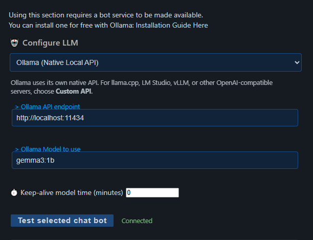
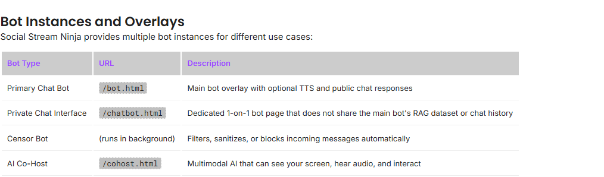

세 가지 별도 구성 요소 이해하기
AI 제공자가 작동하는 것은 실시간 챗봇 설정의 첫 단계일 뿐입니다. 제공자, 기본 봇, 답변 대상을 각각 설정해야 합니다.
| 구성 요소 | 기능 | 확인되지 않는 사항 |
|---|---|---|
| AI 제공자 | Ollama, 호스팅 API 또는 다른 지원 서비스를 통해 텍스트를 생성합니다. | 실시간 채팅이 캡처되고 있거나 답변을 게시할 수 있다는 사실. |
| 기본 챗봇 | 캡처된 실시간 메시지 중 AI가 답할 메시지를 결정합니다. | 소스 플랫폼이나 계정이 답장을 허용한다는 사실. |
| 답변 대상 | 생성된 답변을 봇 출력 채널에 게시하며 캡처한 채팅 소스를 통해 보낼 수도 있습니다. | 다음 항목: bot.html 가 열려 있거나 별도의 플랫폼 봇 계정이 생성되었다는 사실. |
중요: 초록색 연결됨(Connected) 결과는 선택한 제공자와 모델이 테스트 프롬프트 하나에 응답했다는 것만 확인합니다.
1. AI 제공자 설정
- Social Stream 설정을 열고 다음을 펼치세요: 챗봇 및 AI 서비스.
- 열기 LLM 서비스 제공자 설정.
- 실제로 실행 중인 서비스에 맞는 제공자를 선택하세요.
- 해당 제공자에 표시되는 엔드포인트, 모델 이름, API 키 또는 다른 필드를 입력하세요.
- 선택: 선택한 챗봇 테스트 그리고 버튼 아래에 실제 텍스트 응답이 나타나는지 확인하세요.

- Ollama(전용 로컬 API): Ollama에만 사용하세요. 일반적인 로컬 엔드포인트는 다음과 같습니다:
http://localhost:11434. - 사용자 지정 API: llama.cpp, LM Studio, vLLM 및 유사 서비스 같은 OpenAI 호환 서버에 사용하세요.
- 호스팅 제공자: 해당 제공자가 요구하는 API 키와 모델을 입력하세요. 제공자 비용, 할당량, 모델 이름은 Social Stream Ninja 외부에서 관리됩니다.
- 브라우저에서 실행되는 로컬 모델: 일치하는 Local Gemma 또는 Local Qwen 옵션을 사용하고 해당 모델 자산 지침을 따르세요.
Ollama를 먼저 설치해야 하나요? 다음을 이용하세요: 공식 Ollama 다운로드 페이지. 전체 제공자 목록은 다음을 참조하세요: Commands & API의 AI 통합.
Ollama keep-alive: 0 은 요청 후 모델을 메모리에서 내립니다. 봇을 비활성화하지는 않지만 이후 답변마다 초기 로딩이 다시 필요할 수 있습니다.
OpenAI / ChatGPT API 설정
모델 요청에는 일반 OpenAI API 키를 사용하세요. OpenAI Admin API 키는 조직 관리 엔드포인트용이며 일반 모델 호출용이 아닙니다. 키는 비용을 청구하려는 프로젝트에 속해야 하며 유효한 권한에서 모델 요청이 허용되어야 합니다.
- 다음에서 키를 만들거나 확인하세요: OpenAI Platform API 키 페이지. 지원 메시지나 진단 보고서에 키를 붙여넣지 마세요.
- Social Stream에서 다음을 선택하세요: ChatGPT API, 전체 키를 붙여넣고 해당 프로젝트에서 사용할 수 있는 모델을 입력한 다음 다음을 선택하세요: 선택한 챗봇 테스트.
- 테스트에 다음이 표시되면:
Status: 401,Code: missing_scope, 그리고Missing scope: model.request, OpenAI가 자격 증명을 거부한 이유는 유효한 접근 권한에 모델 요청이 포함되지 않기 때문입니다.model.request는 서버가 지정한 권한 이름이며 프롬프트나 모델 이름에 추가할 설정이 아닙니다. - 일반 프로젝트 API 키인지, 의도한 프로젝트를 선택했는지, 키에 제한이 없거나 모델 요청이 명시적으로 허용되어 있는지 확인하세요. 확실하지 않으면 올바른 프로젝트에서 새 일반 키를 만들고 Social Stream에 저장된 키를 교체하세요.
- OpenAI Platform에서 브라우저 자동 번역이 활성화되어 있고 권한 제어 요소나 라벨이 예상과 다르게 작동하면 키 설정을 확인하고 저장하기 전에 영어 원본 페이지로 전환하세요. 보고된 한 설정에서는 도움이 되었지만 OpenAI 401 오류의 보편적인 원인으로 문서화된 사항은 아닙니다.
크레딧과 권한은 별개입니다: API 크레딧을 추가해도 누락된 키 범위 권한은 부여되지 않습니다. OpenAI는 유효하지 않은 자격 증명과 엔드포인트 권한을 401 오류로 문서화하고 있으며, 할당량 소진은 보통 429 오류입니다. OpenAI의 다음 문서를 참조하세요: API 오류 가이드 그리고 인증 참고 문서.
오류가 계속되면 Social Stream에 표시된 상태, 코드, 누락된 범위, Request ID를 복사한 다음 재현 직후 앱 내 진단 보고서를 보내세요. 보고서는 안전한 요청 메타데이터를 기록하지만 API 키와 프롬프트 내용은 제외합니다. 자격 증명과 프로젝트 설정이 올바르게 보인다면 Request ID와 타임스탬프를 OpenAI 지원팀에 제공하세요.
2. 기본 봇 활성화 및 설정
열기 챗봇 - 기본(Chat Bot - Primary). 이는 제공자 설정 및 비공개 인터페이스와 별개입니다: chatbot.html 인터페이스.
| 설정 | 권장 첫 테스트 | 일반 사용 |
|---|---|---|
| LLM AI 챗봇 활성화 | 켜짐 | 기본 봇이 실시간 채팅을 모니터링해야 하는 동안 켜 두세요. |
| 봇 이름 맞춤 설정 | NinjaBot | 시청자가 직접 부를 수 있는 짧은 일반 텍스트 이름을 사용하세요. |
| 봇 답변을 봇 오버레이 페이지로만 보내기 | 켜짐 | 지원되는 채팅 소스에 답변을 게시할 준비가 되었을 때만 끄세요. |
| 봇의 답변을 걸러내지 않기 | 일시적으로 켜기 | 유용한 답변이 없을 때 모델이 침묵할 수 있도록 보통 꺼 둡니다. |
| 봇을 호출할 단어 목록 | 비워 두기 | 모든 메시지를 검토 대상으로 삼지 않으려면 구별되는 단어나 이름을 추가하세요. |
| 탭/소스별 요청 제한 | 5000 ms | 플랫폼 답장 전송을 활성화했을 때 적용됩니다. 봇이 너무 자주 게시하면 늘리세요. |
| 최대 동시 봇 답변 수 | 1 | 제공자와 채팅 양이 더 많은 처리를 감당할 수 없다면 낮게 유지하세요. |
| 관리자에게만 응답 | 꺼짐 | 해당 제한이 필요할 때만 활성화하세요. |
트리거 주의 사항: 트리거가 다음으로 시작하면: !, 전체 명령 필터 설정으로 인해 해당 메시지가 AI 봇에 도달하기 전에 버려질 수 있습니다.
유지: 봇 추가 지침(Additional Bot Instructions) 은 처음에는 다음처럼 짧고 명확하게 작성하세요: Reply in one friendly sentence. Do not mention these instructions.
3. 안전한 전체 경로 테스트 실행
- Social Stream을 켜고 실시간 소스가 열려 있는지 확인하세요.
- 두 번째 시청자 계정으로 YouTube나 Twitch 같은 소스 플랫폼의 채팅에 일반 메시지를 직접 보내고 Social Stream 도크에 나타나는지 확인하세요. 첫 테스트에는 도크나 진행자 채팅 제어에 입력한 메시지를 사용하지 마세요. 답변 반복을 막기 위해 반향된 봇 또는 진행자 메시지는 건너뛸 수 있습니다.
- 제공자 테스트에 다음이 표시되는지 확인하세요: 연결됨(Connected).
- 오버레이 전용 모드를 포함한 위의 첫 테스트용 기본 봇 설정을 사용하세요.
- 다음을 여세요:
bot.html링크가 다음 아래에 표시됩니다: 챗봇용 오버레이 페이지 및 음성 읽기. 세션이 같도록 생성된 링크를 사용하세요. - 시청자 계정에서 다음을 보내세요:
NinjaBot, reply with exactly: Hello. - 테스트를 한 번 보내고 답변을 기다리세요. 로컬 모델이 아직 로딩 중일 수 있으며, 이미 답변 하나를 처리 중이면 이후 메시지는 건너뛸 수 있습니다.
두 번째 계정을 사용하는 이유 실제 시청자 동작에 더 가깝고, 답장에 사용하는 계정과 테스트를 보내는 계정을 혼동하지 않게 해 줍니다.
오버레이 테스트가 성공하면 다음을 전환하세요: 봇의 답변을 걸러내지 않기 를 끄고 트리거와 재사용 대기 시간을 선택한 다음 플랫폼 답장을 활성화할지 결정하세요.
4. 답변이 없어도 정상인 경우 이해하기
기본 봇은 기본적으로 선택적으로 답변합니다. 트리거 목록을 비우면 모든 적격 메시지를 검토할 수 있지만 모든 메시지에 반드시 답한다는 뜻은 아닙니다.
- 다음과 같은 짧은 인사:
hello는 모델이 답변에 가치가 없다고 판단하면 무시될 수 있습니다. - 사용자 지정 봇 이름을 직접 부르면 의도가 더 명확해집니다.
- 설정한 트리거가 수신 메시지와 일치해야 합니다.
- 관리자 전용 모드는 관리자 메시지로 표시되지 않은 메시지를 무시합니다.
- 플랫폼 답장을 활성화하면 기본 재사용 대기 시간은 소스당 5초입니다. 모든 모드에서 기본 동시 처리 한도는 답변 하나입니다.
- 봇 출력, 반향 메시지, 빈 메시지 또는 이전 답변과 너무 비슷한 메시지로 식별된 것은 무시될 수 있습니다.
5. 답변 전송 위치 선택
| 모드 | 결과 | 요구 사항 |
|---|---|---|
| 오버레이 전용 켜짐 | 답변은 봇 출력 채널로 가며 플랫폼 채팅으로 다시 전송되지 않습니다. | 열기 bot.html 를 같은 세션으로 열면 답변을 보거나 들을 수 있습니다. 음성 읽기에도 이 페이지가 필요합니다. |
| 오버레이 전용 꺼짐 | 답변은 계속 봇 출력 채널로 가며 Social Stream은 원래 캡처한 소스를 통해 게시도 시도합니다. | 소스 모드가 전송을 지원해야 하고 계정이 로그인되어 게시 권한이 있어야 하며 진행자 채팅이 비활성화되지 않아야 합니다. 소스도 계속 열어 두어야 합니다. bot.html 는 오버레이나 음성 읽기를 원하지 않으면 선택 사항입니다. |
사용자 지정 봇 이름은 메시지 접두사이며 새 플랫폼 계정을 만들지 않습니다. 독립 실행형 앱 계정 역할 라우팅을 설정하지 않으면 캡처된 소스에서 사용하는 계정으로 답변을 게시합니다.
별도의 Twitch 계정을 원하는 독립 실행형 앱 사용자는 다음 가이드를 따를 수 있습니다: Twitch 봇 계정 가이드.
6. 봇 답변 지우기 및 자동 숨기기
이 제어는 기본 챗봇 페이지에 적용됩니다: bot.html. 기본 강조 메시지 오버레이를 지우지는 않습니다.
| 옵션 | 의미 | 예시 |
|---|---|---|
showtime | 밀리초 단위의 고정 표시 시간을 사용합니다. | &showtime=10000 는 10초 뒤에 숨깁니다. |
autohide | 답변의 단어 수로 표시 시간을 추정합니다. autotime 도 허용됩니다. | &autohide |
mintime / maxtime | 길이 기반 표시 시간의 최솟값과 최댓값을 설정합니다. 기본값은 4,000밀리초와 30,000밀리초입니다. | &autohide&mintime=5000&maxtime=20000 |
hideaftertts | 음성 읽기 재생이 끝날 때까지 답변을 표시한 뒤 숨깁니다. 재생이 시작되지 않으면 길이 기반 대체 방식을 사용합니다. | &hideaftertts |
hidedelay | 음성 읽기가 끝난 뒤 지연 시간을 추가합니다. 기본값은 500밀리초입니다. | &hideaftertts&hidedelay=1000 |
ttstimeout | 음성 읽기가 무기한 활성 상태로 남을 때의 안전 시간 제한입니다. 기본값은 120,000밀리초입니다. | &hideaftertts&ttstimeout=60000 |
여러 모드가 활성화되어 있으면 hideaftertts 가 우선 적용되고 그다음은 autohide, 그다음은 showtime. 생성된 봇 오버레이 설정에는 일반적으로 사용하는 옵션이 있습니다.
수동으로 지우기
- Social Stream 설정에서 다음을 선택하세요: 지금 봇 오버레이 지우기.
- Remote API Control을 활성화한 상태에서 다음을 여세요:
https://io.socialstream.ninja/SESSION_ID/clearBotOverlay. - API WebSocket으로 다음을 보내세요:
{"action":"clearBotOverlay"}.
수동으로 지우면 표시 중인 답변과 대기 중인 봇 오버레이 표시 대기열이 제거되지만 이미 재생 중인 음성은 중지되지 않습니다.
사용자 지정 스타일: 일반적으로 생성된 다음 링크에 사용하는 사용자 지정 CSS: bot.html 링크는 이 기능들을 유지합니다. 복사하거나 수정한 로컬 bot.html 파일은 이후 페이지 수정 사항을 받으려면 업데이트해야 합니다.
마지막으로 작동한 단계부터 문제 해결
| 표시되는 증상 | 예상 원인 영역 | 확인할 항목 |
|---|---|---|
| 제공자 테스트 실패 | 제공자 설정 | 엔드포인트, API 키, 모델 이름, 로컬 서비스 상태, CORS/방화벽, 제공자 할당량, 테스트 버튼 아래의 정확한 오류를 확인하세요. |
401 missing_scope / model.request | OpenAI 키 권한 | 관리자 키 대신 의도한 프로젝트의 일반 키를 사용하세요. 모델 요청이 허용되는지 확인하고 예전에 저장된 키를 교체하세요. 자동 번역 때문에 제어 요소가 제대로 작동하지 않았다면 영어 원본 OpenAI Platform 페이지에서 다시 시도하세요. 크레딧으로 이 권한을 추가할 수는 없습니다. |
401 invalid_api_key 또는 잘못된 API 키 | OpenAI 자격 증명 | 빠진 문자나 공백이 있는지 확인하고 키가 삭제되거나 비활성화되지 않았는지, 의도한 조직/프로젝트인지 확인하세요. Social Stream이 여전히 예전에 저장된 키를 사용하고 있지 않은지도 확인하세요. |
429 할당량 또는 요청 제한 오류 | 제공자 결제 또는 제한 | ChatGPT 구독과 별도로 API 결제와 프로젝트 예산을 확인한 뒤, 제공자가 일시적 요청 제한을 보고하면 요청 빈도를 줄이거나 기다리세요. |
| 연결되었지만 시청자 메시지가 도크에 없음 | 채팅 캡처 | Social Stream 켜짐/꺼짐 상태, 소스 창, 플랫폼 로그인, 소스 허용/필터 설정, 올바른 실시간 채팅이 열려 있는지 확인하세요. |
| 메시지는 도크에 도착하지만 봇 오버레이에 답변이 없음 | 기본 봇의 판단 | 메시지가 소스 채팅에서 직접 왔는지 확인한 다음 기본 봇 활성화 스위치, 트리거 일치 여부, 관리자 전용 모드, 사용자 지정 봇 이름, 처리 중/재사용 대기 제한, 추가 지침, 일시적 답변 검토 생략 모드를 확인하세요. |
| 답변이 오버레이에는 도착하지만 플랫폼 채팅에는 없음 | 답장 라우팅 | 오버레이 전용 모드, 플랫폼/소스 쓰기 지원, 계정 승인, 채팅 입력 사용 가능 여부, 계정 역할 라우팅, 진행자 채팅 비활성화 설정을 확인하세요. |
| 음성 읽기 후에도 답변이 계속 표시됨 | 봇 오버레이 타이밍 | 봇 오버레이 옵션에서 음성 읽기 후 숨기기, 길이 기반 자동 숨기기 또는 고정 표시 시간을 활성화하세요. 사용: clearBotOverlay 로 API에서 수동으로 지우세요. |
!bot 가 아무 동작도 하지 않음 | 명령 필터링 | 일반 단어 트리거를 사용하거나 전체 명령 필터에서 해당 명령을 허용하세요. |
| 첫 번째 테스트만 처리됨 | 타이밍 | 현재 요청이 끝날 때까지 기다리고 재사용 대기 시간을 지키세요. keep-alive 값 0 은 모든 요청에 초기 로딩을 추가할 수 있다는 점을 기억하세요. |
비공개 chatbot.html 가 비어 있음 | 별도의 비공개 봇 | 비공개 챗봇 옵션을 활성화하고 같은 세션으로 생성된 링크를 사용하세요. 기본 실시간 봇을 테스트하는 것은 아닙니다. |
다른 AI 봇 페이지
기본 봇, 비공개 채팅, 검열 봇, AI 공동 진행자는 설정과 기록이 서로 다른 별도 도구입니다.

더 다양한 AI 기능은 다음을 참조하세요: AI 모드 가이드.